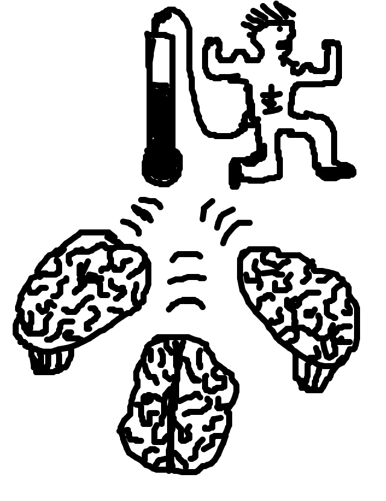

so jason drew...
so rickyc wrote...
The part where three brains are sending signals/flashbacks to someone telling them to RUNNNNN!
so tasia drew...
so mike wrote...
The clouds gathered in a circle for the ceremonial "mutual lightning" on the third tuesday of every month.
so irondavy drew...
so matt wrote...
The thunderstorms were counting down the days until Alanis's wedding.
so tag drew...
so jackcheng wrote...
Maya went looking for the perfect spoon. She found a punctual thunder cloud.